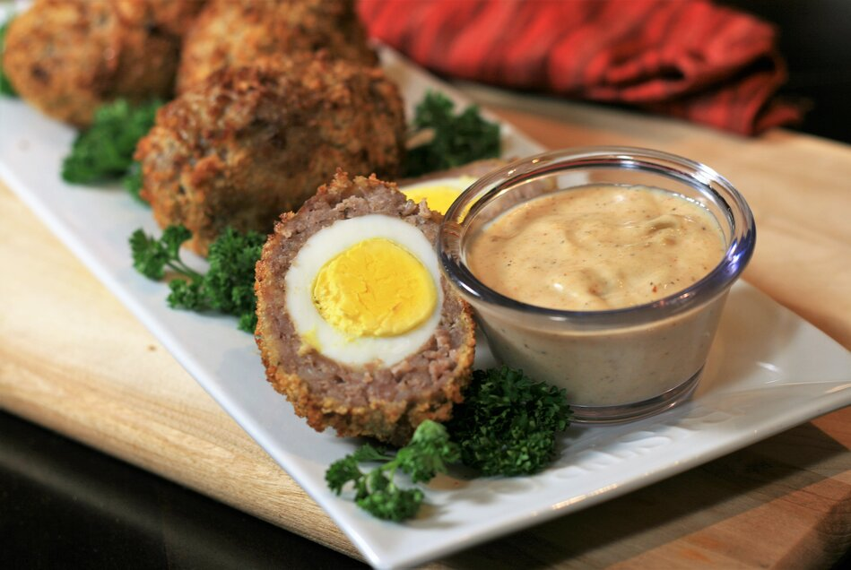

Omelet

Description
Crisp Parmesan Omelet
Ingredients
- 2 eggs
- ¼ teaspoon water
- 1 teaspoon olive oil
- 8-inch non-stick skillet
- 1 ounce freshly grated Parmigiano-Reggiano cheese, or a little less
- kosher salt and freshly ground black pepper to taste
- 1 pinch cayenne pepper
Steps
- Crack eggs into a mixing bowl. Add 1/4 teaspoon water. Whisk together until just beaten (do not overmix).
- Drizzle olive oil into 8-inch nonstick skillet. Brush evenly over the bottom of the pan. Evenly grate cheese into the skillet approximately 1/2-inch deep (or just shy of 1 ounce).
- Place pan over medium-high heat. Cheese will slowly start to melt. When cheese starts to bubble and turn golden brown, about 4 minutes, pour eggs evenly over cheese. Reduce heat to low. Sprinkle with salt, pepper, and cayenne. Cover and let eggs cook on low until they are set, checking after the first 30 seconds. For 2 eggs, this should take about 1 minute, total cooking time. Remove pan from heat. Carefully use a spatula to fold "parmalet" in half. Transfer to serving plate.